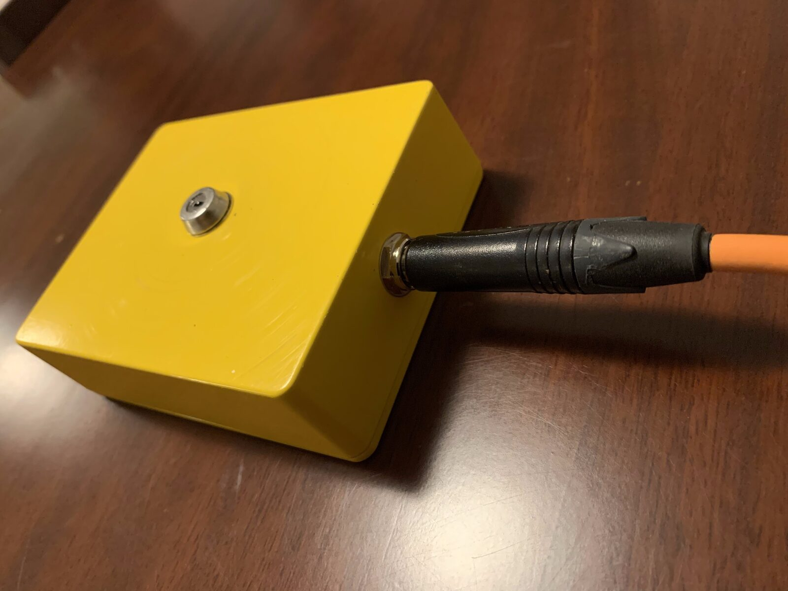
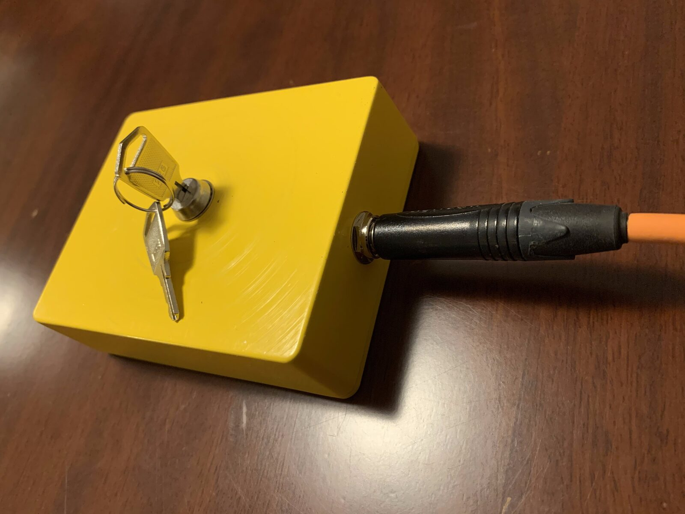
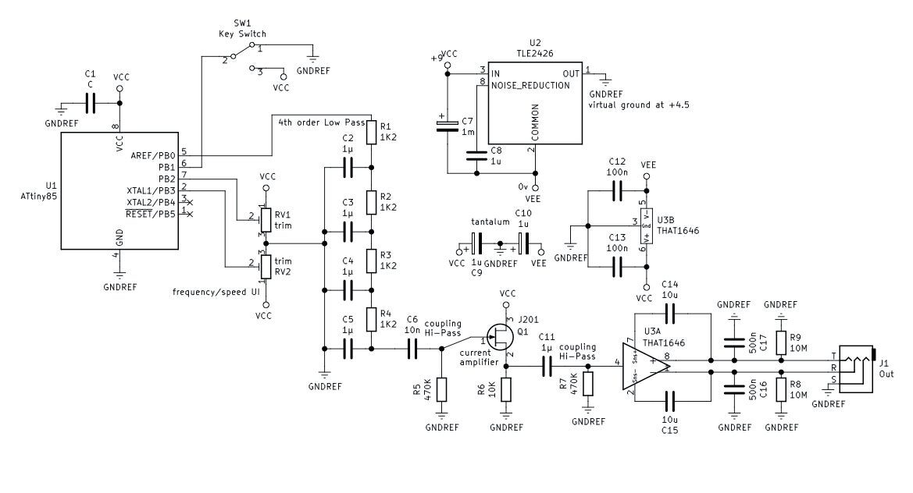
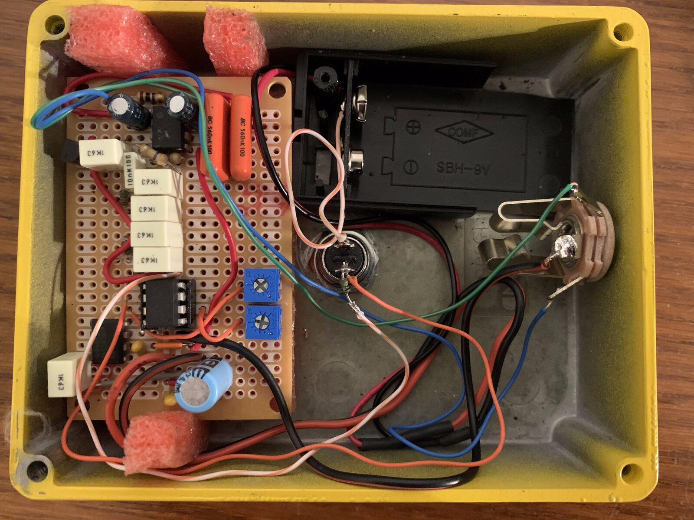
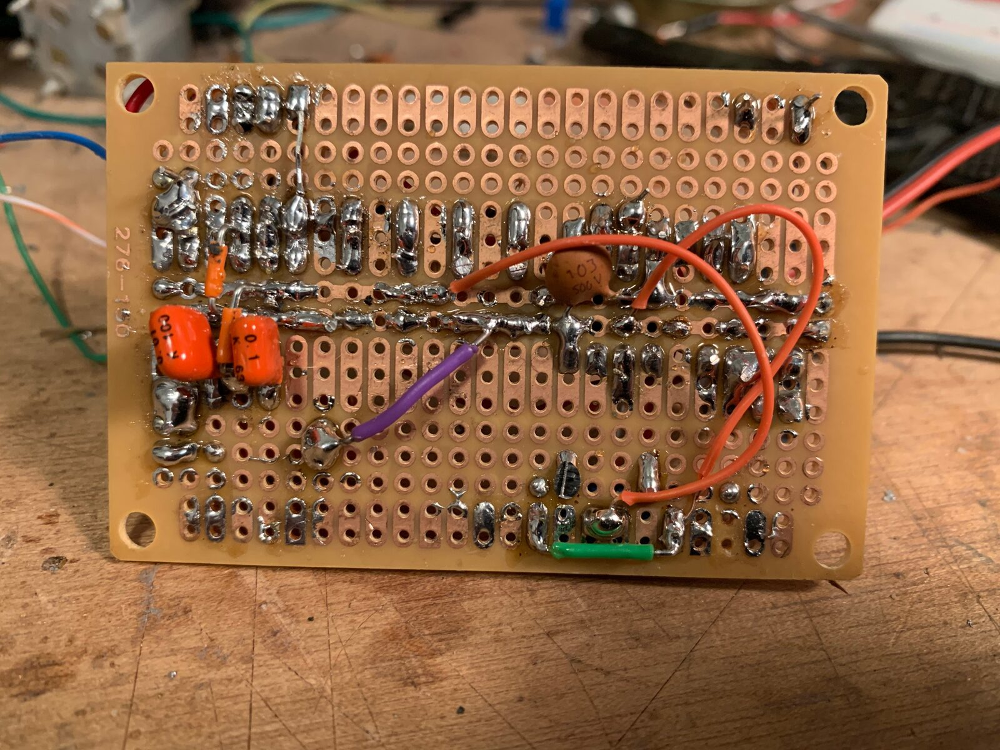
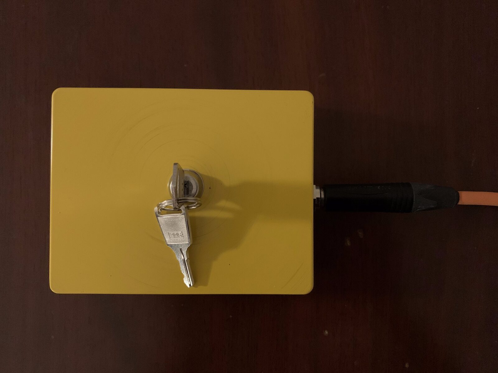

A Yellow Box with a Key Switch and a 1/4\" TRS Balanced Audio Output
Abstract
This short article presents a reductionist infra-instrument. It concerns a yellow die-cast aluminium box only featuring a key switch and a 1/4” TRS balanced audio output as its UI. On the turn of the key, the device performs a certain poem in Morse code and via very low frequency acoustic pulses; in this way, it transforms poetry into bursts of intense acoustic energy that may resonate a hosting architecture and any human bodies therein. It is argued that the instrument functions at the very same time as a critical/speculative electronic object, as an ad-hoc performance instrument, and as a piece of (conceptual) art on its own sake.
Author Keywords
Critical design, Speculative design, Infra-instrument, Hertzian Instrument, Ad-hoc instrument.
CCS Concepts
•Human-centered computing → Human computer interaction (HCI); Interaction devices;
•Applied computing → Arts and humanities; Sound and music computing;
•Hardware → Communication hardware, interfaces and storage; Signal processing systems;
•Human-centered computing → Human computer interaction (HCI); Interaction paradigms; Natural language interfaces;
Introduction and Background
Albeit not the most prominent trend in NIME research, speculative, post-optimal and non market/capitalist oriented approaches to UI design are actively researched and discussed in a number of resources. Drawing upon prior veins in experimental electronic instruments, concerning e.g. circuit-bending [1] or hardware-hacking [2], Bowers and Archer give a detailed account of instruments with restricted interactive potential (infra-instruments) in [3]. Therein, they provide a specimen of several such cases and outline a few different construction strategies of sort (e.g. break/restrict an existing instrument, include obvious mistakes in the design, etc).
NIMEs that meant to hinder (rather than expand) music expression, or that are intended more as a form of inquiry than expression, are encountered in various other contexts, too. Ad-hoc approaches to media art and electronics design are discussed in [4], [5], [6]. Several cases of minimalist, purposely dysfunctional, user-unfriendly, or plain ‘weird’ instruments/interfaces are encountered, e.g., in [7], [8], [9], [10], [11]—to give a few examples. Radically reductionist approaches are discussed in [12], wherein just one knob is deemed enough to “rule them all”, and [13], wherein raw/literal material inquiry becomes a NIME.
Research veins of sort echo concerns of critical design, concerning experimental practices that lie well outside canonical functionality ideals—ones that are generally better understood as playful explorations rather than as technological solutions to properly defined user problems. Or, as in this case too, concerning what else an instrument/interface may be other than merely the means to expanded/enhanced musical expression or to some sort of virtuosity. Design research as the means to articulate critique and/or to explore the more-than-functional/more-than-optimal potential of electronic objects is elaborated upon in great lengths in [14]. Expanding upon this body of research, in [15] Dunne advances the idea of interface design as a way to conceptualise, inquire, speculate, and, possibly, bring forth alternative (imaginary) futures (rather than just as the means to implement the ones that appear feasible within a market/capitalist dominated economy).


Side view of the device.
In tandem with the aforementioned empirical veins and also reverberating concerns of critical/speculative design, this short article presents a reductionist infra-instrument, intended—at the very same time—as a critical/speculative apparatus and as an ad hoc instrument to facilitate a given audio performance. As shown in Figure 1 and Figure 2, it is made of a yellow die-cast aluminium box and has a minimalist UI: just a key switch and a 1/4” TRS balanced audio output to connect to a PA system. On the turn of the key, the device performs a certain poem in Morse code with trains of very low frequency sonic bursts. The poem is by the author and entitled ‘Sentience’; no further information on it are provided, so that only those with the appropriate skills in Morse Code would be able to decipher it. Keeping the poem unintelligible to only but a few is in-line with the conceptual logic governing the overall design: the instrument is radically simple, yet ambiguous in several different respects (as to be further explained).


Side view of the device, with the keys in.
The instrument is meant to be connected to a powerful (array of) subwoofers and, once ‘unlocked’, let alone perform Sentience in its entirety and unattended. Accordingly, it functions as a text to physical energy transformer: converting poetry into bursts of physical vibrations that would make a hosting architecture, and any human bodies in it, resonate. In this fashion, poetry turns to rhythm that is physically felt through one’s body, as well as through space and one’s visceral sensation of it;—yet, the semantics of the original meaning are preserved at a structural level.
Indeed, Morse code is easily recognised as such by the general public as a well established means of communication, even if it is largely unintelligible outside very specific milieux (such as amateur radio or aeronautical navigation). A certain dialectic opposition is forged in this way: clarity of design vs unintelligibility, functional ambiguity and some certain awkwardness/absurdity (why reproduce poetry through an alphabet most people recognise as such but fail to decipher?). Far from a theoretical nuance, this opposition is set out in material terms and through the instruments’s overall design. It should be then noted, that the interface and its material qualities, the specifics of operation, the selection of this particular poem, and the adoption of Morse code are all closely related traits that have emerged simultaneously in the context of the very same artistic experiment and as a response to what could be made fit a yellow die-cast aluminium box with a key switch and a 1/4" TRS balanced audio output.
Having briefly introduced the instrument and some relevant background context, the next sections details its technical implementation; the one after that outlines related offshoots and concludes this short article.
Implementation
The instrument pivots on an ATTny85 micro-controller, programmed to reproduce Sentience in Morse code whenever a logical appears in port pin (hence on, PB) 1, and then halt. When triggered accordingly, it will generate a train of square wave pulses of frequency with a Morse code dot length . These parameters are programmed with two trimmer resistors and through the voltages arriving at PB2 and PB3, respectively and in real time (converted to 8-bit integers via the ATiny85 built-in analogue-to-digital convertors).
Figure 3 illustrates the circuity built around the ATTiny85 chip and in order to convert the square wave pulses into a signal that can accurately drive a professional PA system. Power comes from a battery: a TLE2426 IC is used to create a virtual reference ground at (with respect to the negative battery terminal), creating two power supply rails at with respect to this reference ground. Bypass and stabilising capacitors are included between the power rails, as well as around each IC used.


Figure 3. Schematic.
ATTiny85’s PB0 holds the generated pulses that alternate between digital () and digital (). The subsequent network of stacked RC low-pass filters both attenuates and smooths these square waves, turning them to a train of imperfect sine-waves pulses. The filter topology and the values for and are such so that a cut-off frequency of around with a steep curve is achieved. A simple source-follower comes next, implemented with a JFET transistor. The coupling capacitor forms a very smooth high-pass filter with —with the cut-off frequency around , that removes any DC before the source-follower stage. This stage provides current amplification and, most importantly, lowers the impedance to prepare the signal for the next stage—note that the IC used therein has an input impedance of just .
The final stage revolves around a THAT1646 output line driver IC. The coupling capacitor blocks any unwanted DC, while drives any leakage current to DC ground, so that the signal swings above and below the reference ground. A capacitor is used in parallel with each pair of the balanced audio signal output to completely remove any remaining high frequency noise/hiss, so that very clean and significantly smoothed low-frequency pulses eventually arrive at the output. (The two resistors are meant to just provide a path to ground when there’s no signal at the output.) The output amplitude is at around , and the output impedance is . Note that this circuit features no voltage regulation, so that the output’s amplitude level would naturally drop significantly as the battery dies out—the device is only meant to be used with a fresh battery.


Implemented circuity inside the instrument.
Figure 4 shows the eventual implementation of the circuity inside the instrument, and Figure 5 the back of the perforated board used (some components are soldered therein). When in a new hosting architecture, the instrument should be tuned via the two trimmers, so that the output pulses are in just the right frequency to resonate the space as intended, and so that the Morse code is the one that makes more sense in some particular performance context. Once tuned, the device can be then used to transmit Sentience when turned on with its unique key. A top view of the built instrument is shown in Figure 6.


The back side of the perforated board.


Top View of the instrument with keys in.
Discussion & Conclusion
This article presents a reductionist instrument that only features a key switch and a balanced audio output to drive a PA. Despite the evident similarities with related empirical research veins, as outlined in the Background section, there are a few important differences to be straightaway noticed. Unlike the case of, e.g. [12], reductionist design here does not serve an expansionist agenda, nor does it collapse to merely restricting performance potential or fuelling non canonical interaction schemata. The key switch is only featured as a humble ON/OFF switch to be used just once—in a more dramatic fashion—and not as the means to allow for continuous interaction.
While arguably an infra-instrument proper, the apparatus does not fit any of the categories enumerated in [3]. The most relevant one is probably the “Take something non-instrumental and find the instrument within” (with a DTMF phone dialer and a Geiger counter brought up as examples). Something non-instrumental—that is, Morse code communication technology—is indeed encountered here; but this is just one out of the instrument’s many other idiosyncrasies, and certainly not what makes it makes an infra-instrument out of it. There are much more straightforward ways to transmit Morse code if that was the main trait—let aside that doing so employing such low frequencies is very untypical. The key switch could be thought of, instead, as such a prominent non-instrumental aspect; but again, this is just another of the device’s features, and certainly not wherein its (infra-)instrumenthood lies (we would still have a reductionist instrument if there was a knob instead of the key switch). The latter is probably to be found in the particular tension generated when all these material characteristics are juxtaposed with one another, as well with the generated audio and the unintelligibility of the poem.
Another more or less distinct quality relates with the instrument’s overall minimalist, clean and clear-cut design (some have even called it ‘cute’). The device’s appearance is largely atypical when considering the experimental NIMEs presented in [1] , [2], [6], [7], [8], [11] ,or [13]—to bring some examples. Clear-cut design is, of course, occasionally encountered in an experimental NIME context, but primarily as the means to more functional/optimal UIs rather than the contrary. Herein, it is much more reminiscent of, e.g., neoplasticism, early minimalist sculpture, speculative design practices encountered in everyday objects, or certain trends in conceptual art. Indeed, as is often the case with certain minimalist or conceptualist historical veins, simplicity of form alongside some semantic ambiguity (or absurdity) does allow an object (or a process) become a probe through which qualities of perception and/or material may be foregrounded.
As a sonic instrument it certainly has a rather ‘strange’ UI. Key switches only exceptionally, if at all, appear in either commercial or experimental electronic instruments. EMS Synthi100 does feature a key lock, but merely as the main ON/OFF switch of an otherwise monstrous modular synthesis system; given the cost of this instrument, the key switch’s role must have been to rather restrict access to only those entitled to do so (as is often the case with expensive pianos, too). The author is not aware of any instrument wherein a key switch is used as the sole, or at least as the primary means to interaction with it. This fact alone ascribes the device announced herein a certain ‘uncanniness’. Questions regarding the device’s purpose naturally arise, of course. The presence of the audio jack does not help: other than somehow generating audio, it is not at all evident what should happen when one turns the key.
More importantly, what does eventually happen when one does so, is both uncommon, and disproportionally intense for such a tiny device: poetry is deconstructed into bursts of loud low frequency pulses. It should not be taken for granted that an audience would immediately realise that these trains of pulses are an actual text transmission that can be properly read and, even those who do realise this fact would most likely fail to understand the meaning of it—this remains forever disclosed to all but just a privileged few that happen to have the necessary skills.
Accordingly, there is a prominent element of ‘drama’, concerning both the instrument’s design as well as its being used to facilitate a performance. The logic of the UI is both very gestural and dramatic in its minimalism. These qualities are further accelerated by the instrument’s physical dimensions and overall appearance that do not announce its function and that are rather disproportional to it. The device may be deemed speculative/critical on the level of instrument/interface design alone. There is a certain tension between its constituents and its operation, it is evidently a non market/capitalist oriented instrument that does look weird and does function somehow strangely; more, it looks somehow different even compared to other DIY/experimental infra-instruments. On its own sake, a performance with it bears the marks of a more conceptual approach to (sound) art: transmitting poetry in a fashion that would cast it physically/phenomenologically intense and visceral, yet largely incomprehensible to all but some.
Thence, this device is an ad hoc instrument meant to facilitate a performance as much as it is a conceptual statement on its own sake. Summing up, then, it can be said to simultaneously embody three different roles: (a) it is a critical/speculative electronic object, questioning some of the norms associated with standard HCI and market-oriented UIs (and maybe, to some certain extend, also some of the ones associated with experimental and post-optimal NIMEs); (b) it is an ad-hoc instrument that facilitates an experimental performance with rather prominent gestural/dramatic qualities; (c) it can be thought of as a piece of (conceptual) art on its own sake, capturing a certain uncanniness in its design and exemplifying a certain tension between its individual hardware constituents (pair of keys, key switch, audio output) and its related cultural bearings.
Citations
- ↩Ghazala, Q. R. (1993). Circuit-bending and living instruments. Experimental Musical Instruments, 9, 21–23.
- ↩Collins, N. (2020). Handmade electronic music: the art of hardware hacking. Routledge.
- ↩Bowers, J., & Archer, P. (2005). Not hyper, not meta, not cyber but infra-instruments. In Proceedings of the 2005 conference on New interfaces for musical expression (pp. 5–10).
- ↩Bowers, J., & Villar, N. (2006). Creating ad hoc instruments with Pin&Play&Perform. In Proceedings of the 2006 conference on New interfaces for musical expression (pp. 234–239).
- ↩Koutsomichalis, M. (2018). Ad-hoc aesthetics: context-dependent composition strategies in music and sound art. Organised Sound, 23(1), 12–19.
- ↩Richards, J. (2013). Beyond DIY in electronic music. Organised Sound, 18(3), 274–281.
- ↩Koutsomichalis, M. (2020). Rough-hewn Hertzian Multimedia Instruments.
- ↩Hayes, L., & Stein, J. (2018). Desert and sonic ecosystems: Incorporating environmental factors within site-responsive sonic art. Applied Sciences, 8(1), 111.
- ↩Schoemann, S., & Nitsche, M. (2017). Needle as input: exploring practice and materiality when crafting becomes computing. In Proceedings of the Eleventh International Conference on Tangible, Embedded, and Embodied Interaction (pp. 299–308).
- ↩Richards, J. (2008). Getting the hands dirty. Leonardo Music Journal, 25–31.
- ↩Lepri, G., McPherson, A., & others. (2019). Fictional Instruments, Real Values: Discovering Musical Backgrounds with Non-Functional Prototypes. In Proceedings of the 2019 International Conference on New Interfaces for Musical Expression (pp. 122–127).
- ↩Bowers, J., Richards, J., Shaw, T., Frize, J., Freeth, B., Topley, S., … others. (2016). One Knob To Rule Them All: Reductionist Interfaces for Expansionist Research. In NIME (pp. 433–438).
- ↩Jordan, R. (2015). DIY Electronics: Revealing the Material Systems of Computation. Leonardo Music Journal, 25, 41–46.
- ↩Dunne, A. (2008). Hertzian tales: Electronic products, aesthetic experience, and critical design. MIT press.
- ↩Dunne, A., & Raby, F. (2013). Speculative everything: design, fiction, and social dreaming. MIT press.